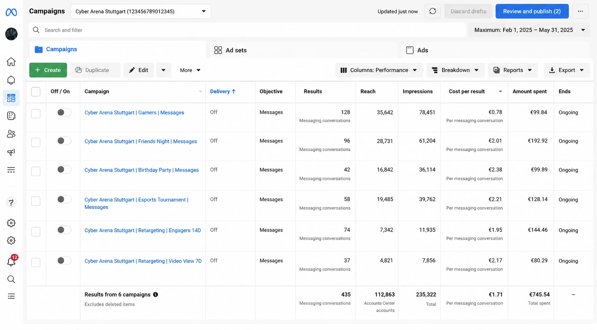

€0,78 за сообщение и €0,56 за подписчика: тест спроса на киберарену в Tier-1 стране
Тест спроса на киберарену в Штутгарте (Германия) в Meta Ads ещё до открытия: сообщения от €0,78 и подписчики по €0,56 — подтверждённый спрос до запуска точки.

О проекте
- Проект: киберарена / компьютерный клуб;
- География: Германия, Штутгарт;
- Канал: Meta Ads;
- Этап: до открытия — до закупки оборудования и запуска точки;
- Цель: проверить спрос на формат киберарены для инвестора;
- Результат: сообщения от €0,78, подписчик по €0,56.
Задача
Перед запуском киберарены в Германии нужно было понять, есть ли реальный спрос на формат компьютерного клуба в Штутгарте.
Проект требовал серьёзных вложений: помещение, ремонт, оборудование, юридическое оформление, команда и операционная модель. Поэтому до инвестиций важно было проверить не просто интерес к играм, а готовность аудитории взаимодействовать с проектом.
Главный вопрос для инвестора: будет ли аудитория в Германии интересоваться киберареной ещё до этапа строительства и полноценного запуска? Нужно было проверить:
- будут ли люди писать в сообщения;
- будут ли спрашивать, где находится клуб;
- будут ли подписываться на страницу;
- будет ли аудитория лайкать и взаимодействовать с контентом;
- можно ли заранее собрать локальное комьюнити в Штутгарте;
- есть ли маркетинговый потенциал у формата киберарены в Германии.
Подход
Проверять спрос через абстрактный опрос («хотели бы вы компьютерный клуб в Штутгарте?») бессмысленно — такие ответы плохо отражают реальное поведение. Человек может сказать «да», но не подписаться и не написать.
Поэтому мы упаковали проект так, будто киберарена уже существует или вот-вот откроется в Штутгарте. Аудитория видела не идею, а конкретное место — Cyber Arena Stuttgart: игровое пространство с мощными ПК, командными играми, турнирами и атмосферой киберспортивного клуба. Это позволило проверить спрос в условиях, максимально близких к реальному запуску.
Что тестировали
Несколько сценариев, через которые аудитория могла заинтересоваться киберареной:
- Киберарена для геймеров — прямой спрос на формат: мощные ПК, быстрый интернет, игровые зоны, командные игры без покупки дорогого компьютера;
- Игра с друзьями — киберарена как место для совместного досуга («собери друзей и приходите играть»), конкурирующее с кино, баром, боулингом, VR;
- Турниры и игровое комьюнити — интерес к локальным турнирам и соревновательному формату;
- Дни рождения и мероприятия — площадка для дней рождения, вечеринок, корпоративов;
- Ретаргетинг — работа с аудиторией, которая уже смотрела видео, переходила в профиль, лайкала и открывала рекламу.
Что сделали
Подготовили рекламную упаковку проекта под рынок Германии:
- позиционирование киберарены под немецкий рынок;
- офферы под разные сценарии посещения;
- рекламные тексты на немецком языке;
- визуалы в формате уже существующего клуба;
- кампании на сообщения, вовлечённость и подписки;
- ретаргетинг на заинтересованную аудиторию;
- тест сегментов: геймеры, студенты, компании друзей, родители, аудитория мероприятий.
Основная задача — не продать посещение (клуб ещё не открыт), а собрать реальные сигналы спроса: человек написал, спросил адрес, подписался, поставил лайк, начал следить за проектом.
Результаты
Тест показал сильную реакцию аудитории. Лучшие кампании давали сообщения по €0,78 — очень сильный показатель для Германии, тем более для локального офлайн-проекта в Tier-1 стране, а не дешёвого массового инфопродукта.
Важнее количества — органический интерес: люди писали в директ, спрашивали адрес и детали открытия, лайкали публикации, подписывались и реагировали на рекламу как на реальное место в городе. Отдельно сильный результат по подписчикам — €0,56 за подписчика, очень низкая стоимость для немецкого рынка и локального офлайн-проекта. Фактически аудиторию можно было собирать заранее, ещё до открытия, формируя первое комьюнити.
Что показал тест для инвестора
- Спрос есть — аудитория в Штутгарте писала, подписывалась, лайкала и задавала вопросы;
- Проект можно продвигать ещё до открытия — интерес и первые контакты собраны без физической точки;
- Есть потенциал локального комьюнити — подписки, сообщения и вовлечённость это подтвердили;
- Формат «уже существующего места» сработал — люди задавали конкретные вопросы: где находится, когда открытие, как попасть;
- Маркетинговый риск оказался низким — дешёвые сообщения, дешёвые подписки, высокий интерес.
Почему проект не был запущен
Несмотря на сильные рекламные показатели, проект не дошёл до физического запуска — но не из-за отсутствия спроса или слабой маркетинговой модели. Остановка произошла из-за юридических и организационных нюансов запуска офлайн-бизнеса в Германии: требования к помещению, разрешения, регулирование, операционные ограничения и особенности законодательства.
С точки зрения рекламы и спроса тест был успешным. Ограничения появились уже на этапе юридической и операционной реализации.